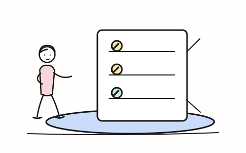

理解项目Profile the work
目标、风险、约束与当前能力
Goals, risks, constraints, and readiness
面向真实数据项目的工作方法Working methods for real data projects
一套从 DAMA-DMBOK 知识结构出发、面向真实项目编排的 17 个技能。先识别问题，再按需组合，不必一开始就加载全部知识域。
A suite of 17 skills shaped around DAMA-DMBOK and organized for real project work. Start with the problem, then compose only the expertise you need.
如果这套技能对你有帮助，欢迎在 GitHub 为仓库加星 If these skills help, star the repository on GitHub01 / 工作方式THE METHOD
总入口先理解项目、选择主次知识域并排定依赖；领域技能再深入各自的方法、工件与验收证据。检查一个领域，不代表必须全部实施。
The router profiles the project, selects primary and supporting domains, and sequences dependencies. Specialist skills then provide methods, work products, and acceptance evidence. Reviewing a domain does not mean implementing everything.
查看总入口技能Read the router skill目标、风险、约束与当前能力
Goals, risks, constraints, and readiness
按主域、基础域与风险裁剪
Tailor primary, foundational, and risk domains
责任人、阶段门与验收证据
Owners, stage gates, and acceptance evidence
02 / 技能目录SKILL LIBRARY
从项目编排、管理基础到数据交付与运营，按任务选择。每项技能都说明适用时机、预期产出，并附一条可直接改写使用的提示示例。
Browse project orchestration, management foundations, and delivery operations. Each skill explains when to use it, what it produces, and includes a prompt you can adapt.
Showing all 17 skills
第一步：看清全局START HERE: SEE THE WHOLE
当范围、分工或采纳方式还不明确时，从这里开始。
Start here when scope, ownership, or adoption is still unclear.
04 项SKILLS项目跨多个知识域，或不确定该调用哪些技能、按什么顺序交付。
An initiative spans several data-management domains, or the right skills and delivery order are unclear.
主域 / 基础域 / 支持域路由、裁剪理由、依赖顺序、阶段门与跨域交付计划。
Domain route, tailoring rationale, dependency order, stage gates, and an integrated delivery plan.
请用 $managing-data-projects，为新建客户数据平台制定 12 周路线图；说明治理、质量、元数据、安全、运营和变更的取舍，以及各阶段门的证据。
Use $managing-data-projects to create a 12-week roadmap for a customer data platform. Explain scope choices across governance, quality, metadata, security, operations, and change, with evidence for each stage gate.
需要以可复核证据评估现状能力、目标能力、差距和改进优先级。
An organization needs an evidence-based current/target capability assessment, gap analysis, and priorities.
评估范围与准则、证据强度、现状 / 目标矩阵、不确定性说明及复评节奏。
Assessment scope and rubric, evidence-strength rules, current/target matrix, uncertainty statements, and reassessment cadence.
请用 $assessing-data-management-maturity，评估三个事业部的治理、质量和元数据能力；说明样本与证据强度，不要在缺少运行证据时给出已核实的集团总分。
Use $assessing-data-management-maturity to assess governance, quality, and metadata across three business units. State sampling and evidence strength; do not claim a verified enterprise-wide score without operational evidence.
要设计中央 / 本地职责、岗位、委员会、共享服务、RACI、预算与协作接口。
Designing central/local responsibilities, roles, committees, shared services, RACI, funding, or coordination.
组织模式比较、目标运行模式、岗位章程、活动级 RACI、资源缺口和试点路线。
Operating-model comparison, role charters, activity-level RACI, resource gaps, and a pilot roadmap.
请用 $organizing-data-management，为跨地区企业比较集中式与联邦式数据办公室；给出中央和事业部岗位、决策接口、RACI、人员容量及试点转换门。
Use $organizing-data-management to compare centralized and federated data offices for a multi-region company. Define roles, decision interfaces, RACI, staffing capacity, and pilot gates.
新目录、流程或标准已建立，却无人使用、被绕过或不能持续。
A new catalog, process, or standard is underused, bypassed, or not sustained.
目标行为、利益相关者准备度、沟通培训、障碍台账、短期胜利与采纳漏斗。
Target behaviors, readiness, communications and training, obstacle log, quick wins, and an adoption funnel.
请用 $leading-data-change，让上线三个月仍只有 12% 主动使用率的数据目录被真实采用；设计经理参与、实操支持、反馈闭环和持续使用指标。
Use $leading-data-change to improve a catalog's 12% active-use rate three months after launch. Address manager participation, hands-on support, feedback closure, and sustained-use measures.
让数据可被信任与管理MAKE DATA TRUSTWORTHY
明确决策、结构、质量、责任与数据使用边界。
Clarify decisions, structure, quality, accountability, and data-use boundaries.
09 项SKILLS收集、共享、画像、AI 或二次使用可能影响个人、公平、自主性或信任。
Collection, sharing, profiling, AI, or secondary use may affect people, fairness, autonomy, or trust.
目的与替代方案、受影响方、收益 / 伤害评估、用途边界、申诉与停止条件。
Purpose and alternatives, affected parties, benefit/harm assessment, use boundaries, recourse, and stop conditions.
请用 $handling-data-ethically，评估将客户行为数据用于个性化定价；列出受影响群体、较少侵入的替代方案、公平风险和决策前所需证据。
Use $handling-data-ethically to assess using customer-behavior data for personalized pricing. Identify affected groups, less intrusive alternatives, fairness risks, and evidence needed before deciding.
定义、所有权、标准或例外跨团队有争议，需要权责、监督和升级机制。
Teams disagree on definitions, ownership, standards, or exceptions and need authority and escalation.
治理章程、决策权与管家职责、政策层级、议题 / 例外流程和记分卡。
Governance charter, decision rights and stewardship, policy hierarchy, issue/exception workflow, and scorecard.
请用 $establishing-data-governance，解决三个事业部对“客户”定义的冲突；给出最终批准人、术语变更流程、争议升级和监督指标。
Use $establishing-data-governance to resolve conflicting definitions of “customer” across three business units. Define the final approver, term-change process, escalation path, and oversight measures.
需要企业、领域或平台的现状、目标、过渡架构与迁移路线，而非只设计一张表。
An enterprise, domain, or platform needs current, target, and transition architecture—not merely a table design.
架构原则与视图、蓝图、关键权衡、依赖路线图和符合性证据。
Architecture principles and views, blueprints, trade-offs, dependency roadmap, and conformance evidence.
请用 $designing-data-architecture，规划 CRM、POS 和电商数据整合的目标架构；比较过渡方案，说明系统责任、数据流和分阶段迁移依据。
Use $designing-data-architecture to plan a target architecture for CRM, POS, and e-commerce data. Compare transition options, responsibilities, flows, and evidence for phased migration.
要把业务要求落实为概念、逻辑或物理模型，并明确实体、粒度、键和规则。
Business requirements must become conceptual, logical, or physical models with explicit entities, grain, keys, and rules.
模型与术语定义、概念到物理的追溯、评审记录、版本及变更控制。
Models and definitions, conceptual-to-physical traceability, reviews, versions, and controlled changes.
请用 $modeling-data，为订单、退款和客户建立逻辑模型；明确订单行粒度、主外键、历史状态及待业务确认的问题。
Use $modeling-data to design a logical model for orders, refunds, and customers. Specify order-line grain, keys, historical states, and questions requiring business confirmation.
需要分类、访问控制、加密 / 脱敏、导出限制、审计和控制测试。
Data needs classification, access control, masking/encryption, export limits, auditability, and control tests.
数据分类、主体 × 数据 × 动作访问矩阵、负向测试、例外和残余风险证据。
Classification, subject-by-data-by-action access matrix, negative tests, exceptions, and residual-risk evidence.
请用 $securing-data，为含客户联系方式的云平台设计最小权限和脱敏控制；列出普通分析员应被拒绝的访问、撤权测试和审计证据。
Use $securing-data to design least-privilege and masking for a cloud platform with customer contact data. Specify denied access, revocation tests, and audit evidence.
合同、邮件、记录或媒体等内容需要分类、检索、发布、保留与处置治理。
Contracts, email, records, or media need lifecycle governance for classification, search, retention, and disposition.
内容清单与分类、词表、生命周期和权限规则、保全 / 处置流程及审计证据。
Content inventory and taxonomy, lifecycle/access rules, hold/disposition workflows, search, and audit evidence.
请用 $managing-documents-and-content，治理多个仓库中的客户合同和邮件；设计分类、版本、检索、保留及法律保全接口，标明须由法务确认的决定。
Use $managing-documents-and-content to govern customer contracts and email across repositories. Design classification, versions, search, retention, and legal-hold interfaces; flag decisions for counsel.
客户、产品等实体身份或受控代码集在系统间不一致，需要权威来源和持续分发。
Shared entity identities or controlled code sets conflict across systems and need authority and distribution.
权威 / 消费矩阵、全局 ID、生存规则、匹配合并拆分测试、代码版本与管家流程。
Authority/consumer matrix, global IDs, survivorship, match/merge/split tests, code versions, and stewardship.
请用 $managing-reference-and-master-data，治理三套 CRM 的重复客户；定义误合并防护、可逆拆分、黄金记录规则、国家码版本和消费者回执。
Use $managing-reference-and-master-data to address duplicate customers across three CRMs. Define false-merge safeguards, reversible splits, golden-record rules, code versions, and consumer acknowledgments.
资产、术语、字段、责任、运行状态或血缘需要可发现、可维护并支撑影响分析。
Assets, terms, fields, ownership, operational status, or lineage must be discoverable and maintained.
最小元数据产品、目录 / 词汇表、运行血缘、影响分析及覆盖和新鲜度指标。
Minimum metadata product, catalog/glossary, run lineage, impact analysis, and coverage/freshness measures.
请用 $managing-metadata，为三个关键报表建立可搜索目录和字段级血缘；要求从报表反查源批次，并演练源字段变更的下游影响。
Use $managing-metadata to build a searchable catalog and field-level lineage for three critical reports. Trace each report to its source run and test the impact of a changed source field.

数据缺陷反复出现，需要按业务用途定义规则、找根因并建立预防和监控。
Defects recur and the business needs fit-for-purpose rules, root-cause analysis, prevention, and monitoring.
版本化质量规则、基线、业务影响排序、根因整改、问题闭环和趋势评分卡。
Versioned quality rules, baselines, business priorities, root-cause remediation, issue closure, and scorecards.
请用 $improving-data-quality，处理客户地址清洗后再次失效的问题；区分存量修复与新增预防，定义配送用途规则、根因证据和复发指标。
Use $improving-data-quality to address customer addresses that become invalid again after cleanup. Separate existing-record repair from prevention and define delivery-specific rules and recurrence measures.
把能力交付到运行中PUT CAPABILITIES TO WORK
把数据移动、保存、分析或用于模型，并在生产中持续验证。
Move, persist, analyze, or model data—and keep verifying it in production.
04 项SKILLS数据需在系统间以批量、CDC、流、API 或共享方式移动并互操作。
Data must move or interoperate between systems through batch, CDC, streams, APIs, or sharing.
模式选择、接口契约、源目标映射、重试 / 重放、血缘、对账与 SLA。
Pattern decisions, interface contracts, mappings, replay and reconciliation design, lineage, and SLAs.
请用 $integrating-data，设计 CRM 到计费系统的客户变更 CDC 管道；覆盖乱序与重复事件、幂等重放、schema 变更和业务对账。
Use $integrating-data to design a customer-change CDC pipeline from CRM to billing. Cover out-of-order and duplicate events, idempotent replay, schema changes, and business reconciliation.
数据库、湖仓或文件存储需要容量、性能、备份恢复、变更发布或运行移交。
A database, lakehouse, or file store needs production readiness, capacity, recovery, change control, or handoff.
服务目标、容量成本、RTO / RPO、恢复演练、监控、运行手册和 Go / No-Go 证据。
Service targets, capacity/cost, RTO/RPO, recovery drills, monitoring, runbooks, and Go/No-Go evidence.
请用 $operating-data-storage，评估新分析数据库的生产就绪性；给出恢复演练、容量与性能测试、值班移交和不能上线的条件。
Use $operating-data-storage to assess a new analytical database before production. Define recovery drills, capacity/performance tests, on-call handoff, and release blockers.
交付数仓、数据集市、指标、报表或仪表板，涉及口径、历史比较或业务验收。
Delivering a warehouse, mart, metric, report, or dashboard with definition, history, or acceptance needs.
决策到指标追溯、指标契约、事实粒度、一致维度、装载对账与发布采纳证据。
Decision-to-metric traceability, metric contracts, fact grain, conformed dimensions, reconciliation, and adoption evidence.
请用 $delivering-data-warehousing-and-bi，交付高管销售仪表板；先解决“收入”口径与退款归属，再定义认证指标、历史同比和验收标准。
Use $delivering-data-warehousing-and-bi to deliver an executive sales dashboard. Resolve revenue and refund attribution before defining certified metrics, year-over-year history, and acceptance tests.
要检验数据假设、开发或部署统计 / 机器学习模型并管理实验与生产风险。
Testing a data hypothesis or building/deploying a statistical or machine-learning model with production controls.
假设、数据与特征卡、独立验证、模型卡、灰度门、漂移监控和回滚标准。
Hypotheses, data/feature cards, independent validation, model cards, rollout gates, drift monitoring, and rollback criteria.
请用 $delivering-data-science，为客户风险评分模型设计上线方案；固定预测时点、时间切分和独立测试，并定义分群误差、人工兜底和停用条件。
Use $delivering-data-science to design a customer-risk model launch. Fix prediction time, temporal split, and independent test; define group errors, human fallback, and stop conditions.
没有找到匹配项。试试其他关键词或清除筛选。No skills match. Try another term or clear the filters.
03 / 开始使用GET STARTED
下载后，把完整技能目录放入目标项目的 .agents/skills/。跨域项目安装总入口与相关领域技能；聚焦任务可只装对应技能。
Download the package and copy complete skill folders into your project's .agents/skills/. For cross-domain work, install the router and relevant domain skills; focused work can use one skill.
DMBOK 是知识来源，不是对代理发出的操作指令。本套件不代表 DAMA 官方表单、法律意见或认证标准；真实项目中的事实、法规、阈值和权限仍须由相应责任人确认。DMBOK is source material, not instructions to the agent. This suite is not an official DAMA form, legal advice, or certification standard. Project facts, law, thresholds, and authority still require confirmation by accountable owners.